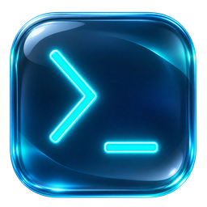

Your projects, on your terms.
Group repositories and services into local projects. Keep frontend, API, workers, and databases together, even when they live on different platforms.

DashowBoardA little less tab switching.
A lot more clarity.
Bring your repositories, deployments, services, and incidents into one beautifully focused desktop workspace.
Code, deployments, and data. Together.
FOUR PLATFORMS. ONE PLACE TO LOOK.
Your code lives in one place. Your infrastructure lives in several. Your understanding of it all should feel connected.
Group repositories and services into local projects. Keep frontend, API, workers, and databases together, even when they live on different platforms.
See healthy, degraded, offline, updating, and unknown states. Optional URL health checks help you look beyond a successful deployment.
Follow meaningful state changes, response-time observations, deployments, and incidents in a persistent local timeline.
Your settings, project links, and history live in local SQLite. Tokens are handled by the native credential vault. DashowBoard reads your resources without creating or deleting them.
Read about securityNo new account to manage. No new home for your code. Just connect what you already use.
Add read-only tokens for the integrations you need. Each provider stays independent.
Create local projects and link repositories, services, and optional health checks.
Let the app refresh your services, track changes, and surface what needs your attention.
Built to give you visibility,
without taking over your infrastructure.
No. The integrations are read-only. Removing a project or connection in DashowBoard only removes local links or stored credentials, not the resources on your providers.
Project groups, settings, snapshots, and incidents are stored in SQLite on your computer. Provider tokens are kept in the operating system's native credential vault.
No. Connect only the platforms you use. A project can have multiple repositories and services, and a service can exist without a repository.
Packaged releases currently target Windows. The project uses Tauri 2; see the repository for development setup and platform prerequisites.
Yes. Explore the code, report issues, or contribute on GitHub. You can also build and run the desktop app locally.
Your projects deserve more than another browser tab.
Download for WindowsOpen source · Local first · Built with Tauri